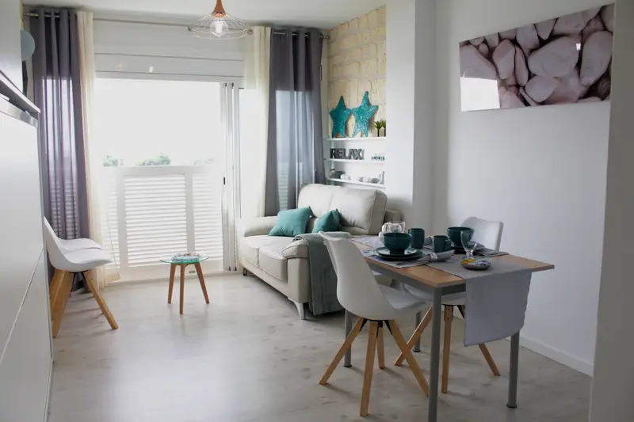
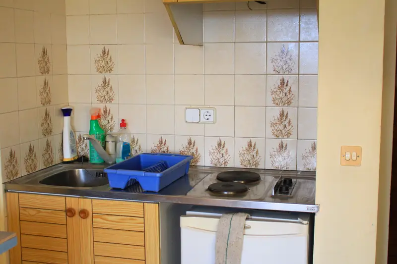
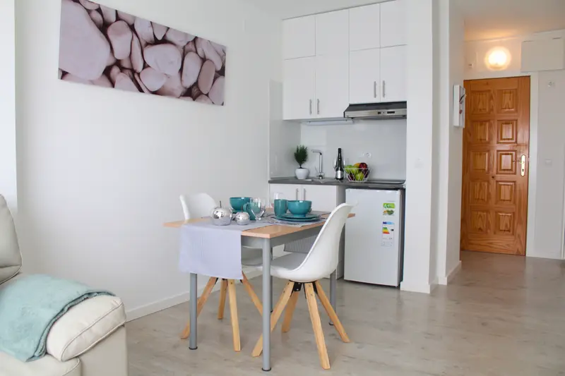
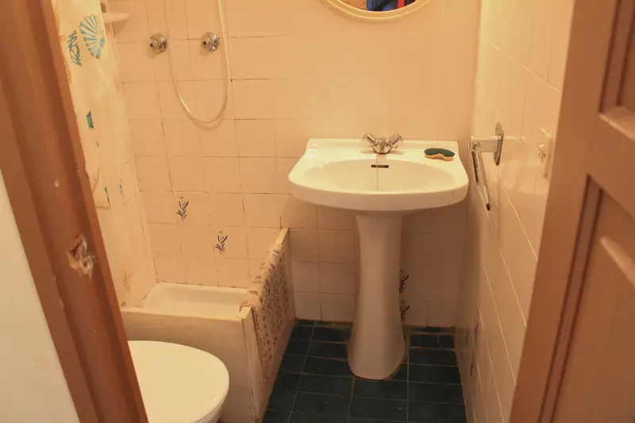
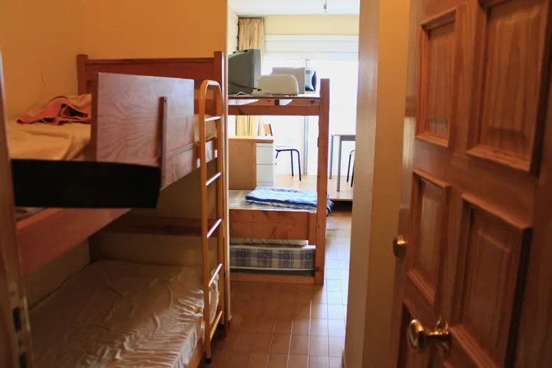
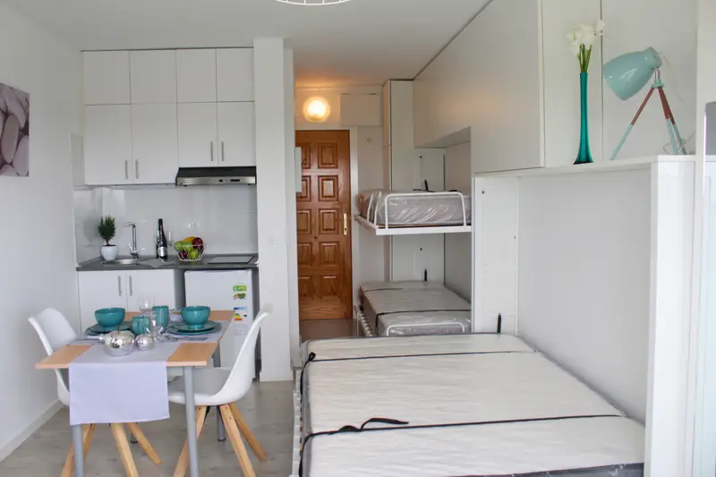

Reforma de estudio de 30 m² en Empuriabrava

- Localidad
- Empuriabrava
- Tipo de obra
- Reforma integral
- Superficie
- 30 m²
Qué hicimos
Este estudio en Empuriabrava fue completamente reformado para actualizar su distribución, materiales y diseño. El trabajo incluyó:
- Instalación de parquet nuevo en toda la vivienda.
- Renovación completa de la cocina, con mobiliario moderno.
- Reforma completa del baño.
- Colocación de nuevas puertas interiores.
- Reparación y pintura general en paredes y techos.
- Optimización de la iluminación y acabados.
Antes y después
Desliza la imagen o usa las flechas del teclado para comparar cada espacio.

Antes
DespuésCocina

Antes Después
DespuésBaño

Antes
DespuésZona de descanso


El resultado
El resultado final es un espacio amplio, luminoso y totalmente funcional, ideal tanto para vivir como para aumentar su valor de mercado.
¿Quieres una reforma como esta? Cuéntanos tu caso.
Siguiente proyecto
Reforma completa de baño en Empuriabrava